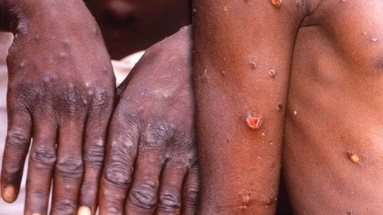
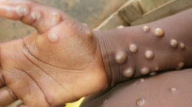
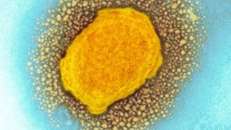
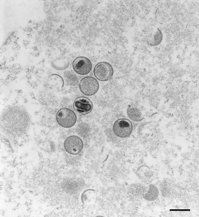
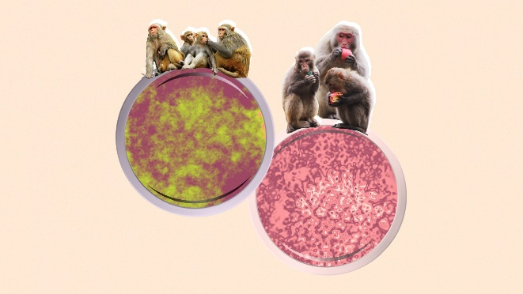

Mehmet Simsek
My name is Mehmet Simsek. I am a 3rd year Computer Technology and Information Systems student. I live in Kahramanmaraş. I am studying at Mersin University. I have a strong interest in software and music production. My hobbies are writing code, making music, reading books and playing football. My future plans are to work as an intern in any software company first. I have been creating projects with data science and c# windows form applications for 3 years. The companies that I will do my internship will also be related to these fields. My primary goal is to find a job in the company where I did my internship in my hometown. Then I want to advance from my current position to management. I have to work hard for this. For this, it is necessary to follow current issues. I want the software company I am in to be higher level than other software companies. I love teamwork. That's why communication and dialogues are very important. My primary thoughts in the projects I will do is that the project appeals to all humanity. An example of my project is as follows.
PROJECT TO PREVENT MONKEYPOX VIRUS

I will create 3 separate categories to prevent the spread of the monkeypox virus. I want to fight in an easy, clear and understandable way and prevent the spread of the virus by categorizing them as infected, risky and risk-free.
I aim to deliver this system to all the people in our country first and then to all the countries in the world that want consultancy on this issue.
This project enables us to be stronger and more experienced against infectious diseases such as viruses. Early and rapid case identification is very important during the pandemic. We must take action to isolate cases and appropriate contacts in order to reduce the forward spread and understand the significant risks and modes of transmission. Digital technologies are being used around the world to support the public health response to combat the virus, including population surveillance, case identification, contact tracing, and assessment of responses based on mobility data and public communications. These quick replies aim to capture the barriers to billions of mobile phones, huge online datasets, connected devices and applications. The future of public health is likely to become increasingly digital, and I am reviewing the need to align international strategies for the regulation, evaluation and use of digital technologies to strengthen pandemic management and future preparedness for the Monkeypox Virus and other infectious diseases.

Monkeypox virus has become quite common for some time in Africa, where many diseases are seen. However, in a short time, cases began to be encountered in Portugal and other European countries. The first case detection outside of Africa came from Portugal. Just after the 15 cases seen in Portugal, 7 cases were found in England last Monday. Another country with similar news was Spain, and authorities reported that they suspected 8 people were carrying the monkeypox virus. Similar news comes from many countries in Europe and the number of cases continues to increase. After Portugal, England and Spain, the first case came from the USA. Due to the lethal effects of the virus, the increase in the number of cases is taken very seriously. The first symptoms seen in cases of monkeypox virus are: headache, fever, muscle pain, back pain, chills, fatigue, and swollen lymph nodes. Although the initial effects of the virus are quite similar to COVID-19, the biggest effect of monkeypox is the swellings that can be seen on the body. However, these swellings vary from person to person and may not appear immediately. The effects of the virus begin to show its effects in the body between 5 and 21 days. The World Health Organization says other symptoms help distinguish the virus from smallpox. Preventive measures include physical or social distancing, quarantine, indoor ventilation, covering the mouth and nose when coughing and sneezing, washing hands and keeping unwashed hands away from the face. The use of face masks in public environments is recommended to minimize the risk of transmission. Various vaccines have been developed and mass vaccination campaigns have been initiated by various countries. Although studies are underway to develop drugs that inhibit the virus, primary treatment is currently symptomatic. Control processes; It includes management of symptoms, supportive care, isolation, and experimental measures. Therefore, it is necessary to get rid of the heavy burdens brought by this epidemic and gain skills against other possible attacks.
Pandemic drills should be held all over the country. Although we do not have such an infrastructure for now, thanks to this project, I aim to fight the virus by separating it into colors. First of all, there are three colors - red, yellow and green. And in every person's work, neighborhood, apartment; that is, it has a family tree structure with the people around it. If a person is definitely infected, that person is red. People in that person's apartment, neighborhood, and workplace turn yellow and remain green in people who are not around. After 14 days, if any of the people around them are not infected, the yellow ones will turn green. So I can get serious data about the virus.
All people can use it because monkeypox virus concerns all people.